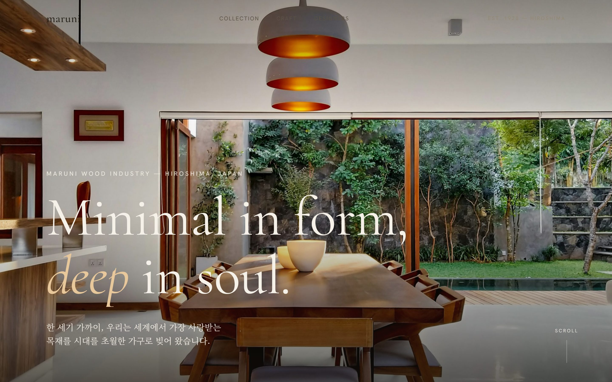
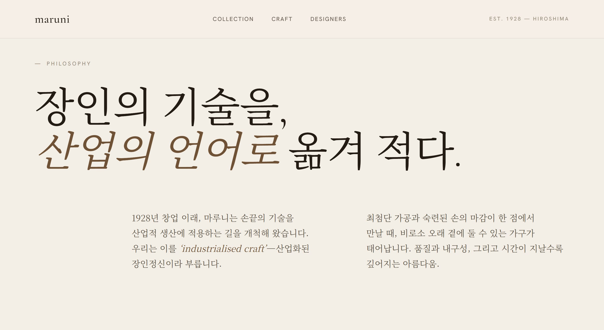
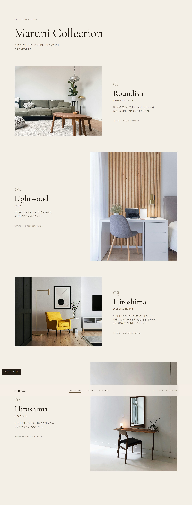
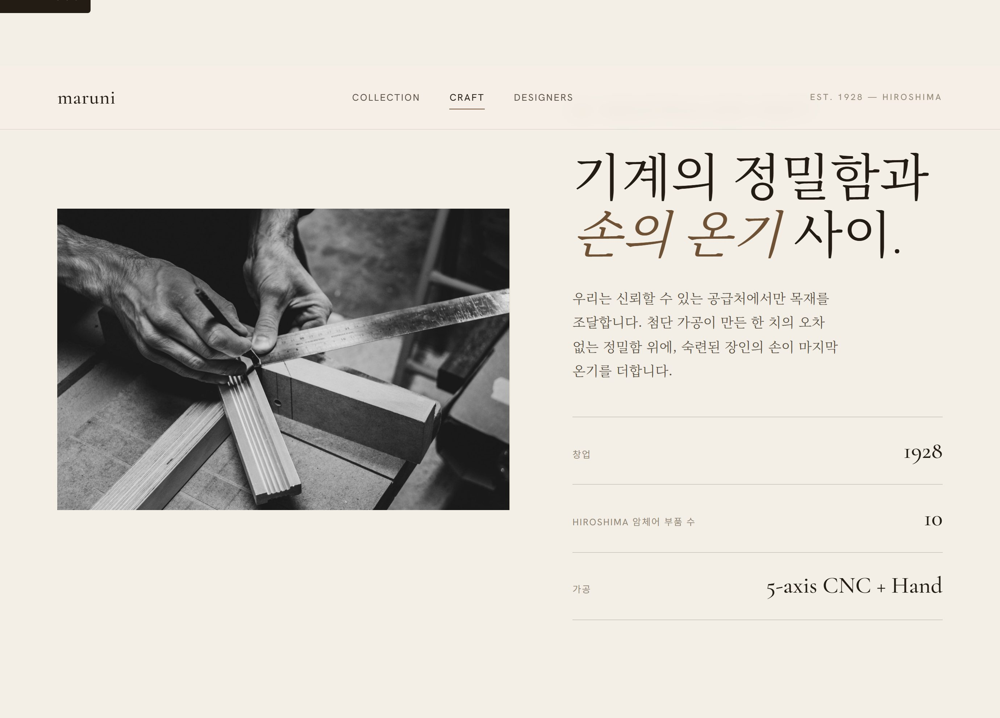
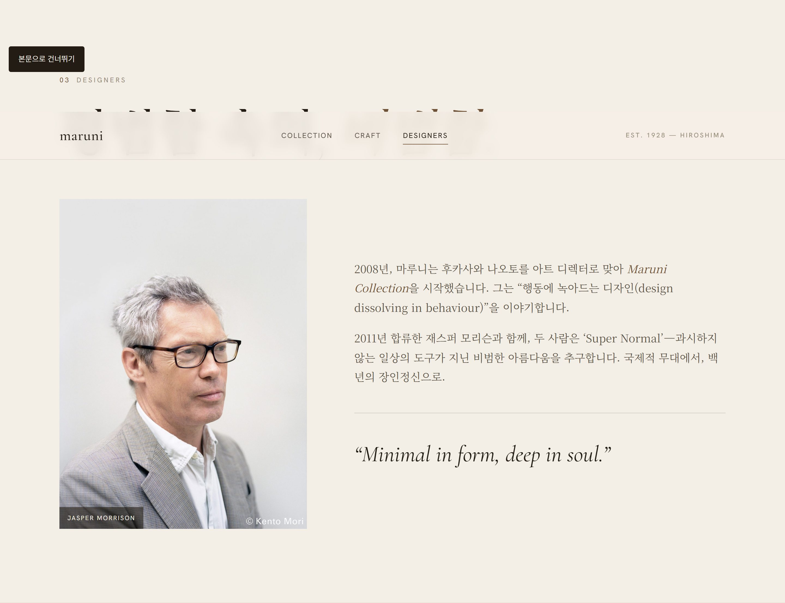
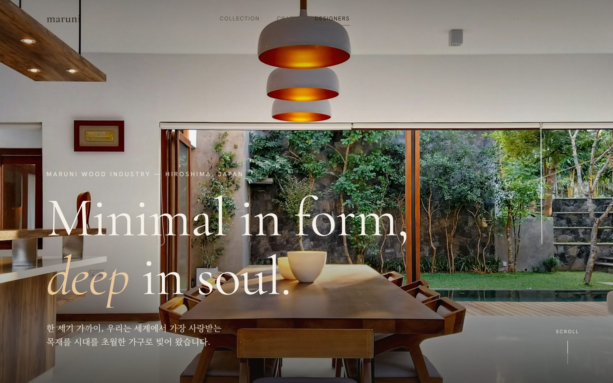
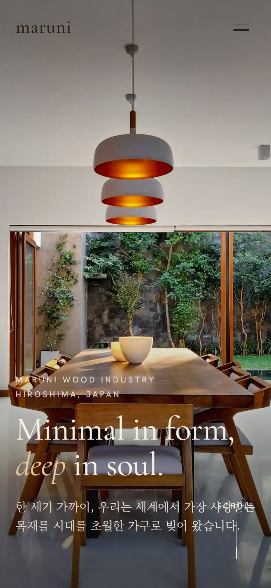

Minimal in form,
deep in soulMARUNI · QUIET LUXURY
1928년 히로시마에서 시작된 목가구 브랜드. 장인의 기술을 산업 생산으로 옮기는 'industrialised craft'가 정체성이다. 제품 탐색·유통이 앞서던 maruni.com을 느리게 음미하는 뮤지엄 에디토리얼 서사로 재해석한 리디자인의 UX 사고 과정을 12단계로 기록한다.
브랜드와 사용자를 먼저 이해한다
브랜드 목적
1928년 히로시마에서 시작된 목가구 브랜드. 장인의 기술을 산업 생산으로 옮기는 industrialised craft(산업화된 장인정신)가 정체성이다. 후카사와 나오토·재스퍼 모리슨과 함께 Super Normal(과시하지 않는 일상의 비범함)을 추구한다.
핵심 가치
시간을 초월하는 디자인 · 기계 정밀함과 손의 온기 · 절제된 아름다움(quiet luxury) · 내구성. 스펙이 아니라 '철학·만듦새·질감'을 음미하게 만드는 브랜드다.
주요 사용자
- 가구 애호가 — 오래 곁에 둘 '평생 가구'를 신중히 고르는 고관여 구매층
- 디자인 리터러시층 — 디자이너(후카사와/모리슨)·제작 방식에 가치를 두는 사람
- 채용담당자·동료 — 에디토리얼 감각과 절제된 인터랙션 완성도를 평가
기존 사이트를 진단한다
2026-07-05 실제 maruni.com/en(공식 영문)에 접속해 내비·IA·콘텐츠·톤을 실측한 결과. (maruni.com 최상단은 JS 스플래시라 구조가 드러나는 영문 사이트를 기준으로 함. 접근성·모바일 세부는 범위 밖.)
- 정보구조(IA)
- 최상위 내비가 PRODUCTS · DESIGNERS · INSPIRATIONS · DEALERS · ABOUT US(+NEWS·PRESS·CONTACT). Products는 Search/Catalogs/Product Sheets/Materials, Dealers는 지역별 대리점 — '제품 탐색·유통' 구조가 앞선다. 브랜드 철학·제작 서사는 About 하위(Philosophy·Factory)로 분리되어 제품 탐색과 단절된다.
- 홈 구성
- 히어로가 NEW COLLECTIONS 2025(5개 컬렉션 카드)로 시작 → NEWS → PRODUCT SERIES(Hiroshima·T&O) → PROJECTS → 뉴스레터/SNS의 '신규 컬렉션·제품 카드 나열' 리듬으로 이어진다.
- 헤리티지·디자이너
- 창립 '1928'은 홈에서 전면화되지 않는다. 디자이너(Fukasawa·Morrison·Nendo·Sanaa)는 'Design by [이름]' 제품 귀속 라벨·개별 페이지로 존재하나, '철학·만듦새'를 잇는 몰입 서사로 엮이지 않는다.
- 시각 톤·콘텐츠
- 컬렉션별 대형 이미지 카드 중심, 텍스트 최소(3~5줄)로 갤러리형 톤은 선다(강점). 다만 스토리텔링은 약하고 카탈로그·제품 기능이 앞서, '느리게 음미하는' 서사 밀도는 낮다.
- 인터랙션
- 대형 카드 클릭·별도 비디오 섹션 위주의 정적 구성. '느린 음미'를 매개하는 확대·전환 리듬 장치는 관측되지 않는다.
- 접근성·모바일
- 렌더 DOM·모바일 전환 세부는 이번 실측에서 확인하지 않았다(추정 배제). 별도 실측을 권장한다. (관측 한계)
무엇이, 왜 문제인가
- P1
상거래형 IA가 '철학·만듦새'라는 브랜드 핵심을 제품 탐색에서 밀어낸다. ← 전환(구매) 최적화를 우선해 브랜드 서사를 종속 페이지로 분리함
- P2
균질 그리드·가격 강조가 '음미'가 아닌 '비교·스캔' 모드를 유발한다. ← 제품을 '비교 대상'으로 다루고 큐레이션·여백의 위계를 설계하지 않음
- P3
작은 병렬 이미지로는 곡면·나뭇결 같은 소장 가치의 핵심 디테일이 전달되지 않는다. ← 이미지를 썸네일로만 취급, 디테일을 '가까이 보는' 뷰를 제공하지 않음
- P4
스펙 위주 카피로 '왜 이 형태인가/누가 만드는가'의 서사가 약하다. ← 콘텐츠를 스펙 데이터로 환원하고 만듦새·디자이너 서사를 승격하지 않음
- P5
확대 시 맥락이 끊겨 '느린 음미'의 리듬이 깨진다. ← 확대를 단순 팝업으로 처리해 위치·맥락의 연속성을 고려하지 않음
사용자는 "오래 곁에 둘 가구의 철학·만듦새·질감을 느리게 음미"하려 하지만, 상거래형 균질 그리드와 작은 이미지 때문에 '비교·스캔'에 그치고 소장 가치를 확신하지 못한다.
디자인 목표
브랜드를 '뮤지엄 에디토리얼(quiet luxury)'로 재편해 음미의 태도를 유도한다. (→ P2)
철학·만듦새·디자이너 서사를 제품과 하나의 흐름으로 통합한다. (→ P1·P4)
가구 디테일(곡면·결)을 '가까이 보는' 연속적 확대 경험으로 제공한다. (→ P3·P5)
감성 타이포를 쓰되 본문 가독성·폼 접근성·모바일 리듬을 지킨다.
'태도→물건→방법→사람' 에디토리얼 서사로 재편
- Hero진입
- Manifesto철학
- Collection제품
- Craft만듦새
- Designers사람
- Footer관계
- S1 에디토리얼 IA — Hero → Manifesto(철학) → Collection(제품) → Craft(만듦새) → Designers(사람) → Footer(관계)의 '태도→물건→방법→사람' 서사로 재편. (→ P1)
- S2 여백 큐레이션 — 가격·필터·장바구니를 배제하고, 가구 한 점씩을 좌/우 교차(data-side)로 넉넉한 여백과 함께 제시해 '비교'가 아닌 '음미' 모드를 유도. (→ P2)
- S3 세리프 리빌 리듬 — SplitType으로 세리프 헤딩(st-target)을 한 단어씩 차오르게 리빌해 '느림'을 시간 축으로 구현.
- S4 공유요소 확대 — GSAP Flip으로 썸네일이 전체 화면으로 '자라나는' 라이트박스 → 확대 시 위치·맥락이 이어져 디테일 음미의 연속성 확보. (→ P3·P5)
- S5 만듦새 서사화 — Craft 섹션에 '창업 1928·부품 10·5축 CNC+Hand' 팩트 리스트로 'industrialised craft'를 구체적 증거로 제시. (→ P4)
- S6 가독성·접근성 — 세리프(Cormorant/Noto Serif KR) 감성과 본문 가독 폰트를 병용, 뉴스레터 폼 라벨(visually) 제공, skip-link, 시맨틱 섹션.
전략을 화면으로 옮기다




'웜 뮤지엄' 디자인 시스템
Palette
- ivory#F4EFE6
- oat#ECE3D4
- sand#E2D6C2
- espresso#221C14
- walnut#6F5236
- stone#938875
Typography
Cormorant Garamond — Minimal in form, deep in soul세리프 제목 · 음미
Hanken Grotesk · Noto Sans KR — 절제된 큐레이션의 본문본문·라벨 · 가독
Motion
SplitType 세리프 리빌(한 단어씩 차오름) · GSAP Flip 공유요소 라이트박스(썸네일→전체화면) · 호버 스케일 —
'느림'을 시간 축으로 조형화했다. 모두 prefers-reduced-motion에서 축소하며,
ease는 cubic-bezier(0.22, 1, 0.36, 1) 하나로 통일해 리듬을 일관되게 유지한다.
완성된 화면


결함을 보강하다 컨셉 보존형 2차 개선
기대 효과
- 에디토리얼 서사로 사용자가 '비교'에서 '음미' 모드로 전환되어 브랜드 격을 체감한다. (P2)
- 철학·만듦새·디자이너가 제품과 한 흐름으로 통합되어 소장 가치가 설득력 있게 전달된다. (P1·P4)
- Flip 공유요소 확대로 곡면·결 디테일을 맥락 유지한 채 감상 → 구매 확신이 강화된다. (P3·P5)
- SplitType 리빌의 '느림'이 quiet luxury의 정서를 시간 축으로 각인한다.
- 세리프 감성과 본문 가독·폼 접근성의 병행으로 미감과 사용성을 동시에 만족한다.
회고
이 프로젝트에서 가장 중요했던 판단은 상거래형 사이트를 '팔지 않기로' 결정한 지점이었다. 원래의 maruni.com은 신규 컬렉션 카드와 카탈로그·유통이 앞서는 구조였지만, 그렇게 나열할수록 '오래 곁에 둘 가구'라는 격은 옅어졌다. 그래서 가격·필터·장바구니를 걷어내고 Hero → Manifesto → Collection → Craft → Designers의 에디토리얼 서사로 재편했다. 더 많이 보여주기보다, 덜 보여주고 오래 머물게 만드는 선택이었다.
다음 고민은 몰입과 가독성·접근성의 균형이었다. SplitType 세리프 리빌과 GSAP Flip 라이트박스는 '느린 음미'를
물리적으로 체감시키는 핵심 자산이라 포기할 수 없었지만, 감성 타이포와 확대 인터랙션은 가독성·키보드 접근성과 자주 충돌했다.
그래서 세리프는 제목에만 쓰고 본문은 가독 폰트로, 라이트박스에는 tabindex·role·포커스 트랩을 더해
'음미'와 '균등한 접근' 사이를 조율했다. 모든 모션은 prefers-reduced-motion에서 축소된다.
남은 과제도 솔직히 남겨둔다. 모바일에서 사라지던 nav는 드로어로 보강했지만, 실제 SNS·뉴스레터 백엔드는 아직 없어 죽은 링크와 폼을 placeholder로 처리했다. 세리프 리빌의 로딩 체감과 모바일 성능은 브라우저 실측으로 계속 확인이 필요하다. 이 케이스 스터디는 그 과정을 감추지 않고 드러내는 기록이다.